首页
请假态
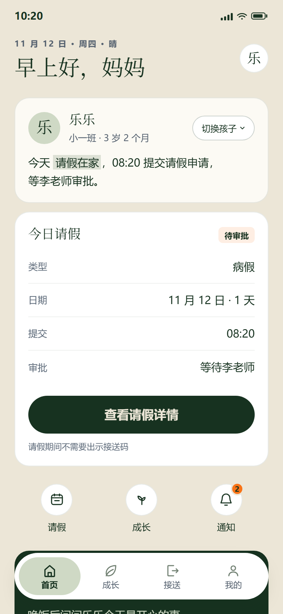
养成星球 · 家长端 · VARIANTS
左边是 31 页 baseline，右边是同一页的变体/提案。变体不替换 baseline；带“提案”的页面需要先改后端契约。共 8 组 / 10 页。31 页 baseline 画廊 →
乐乐发烧请假在家（待审批）；01/17 改请假态，与 baseline 的“在园”并存。

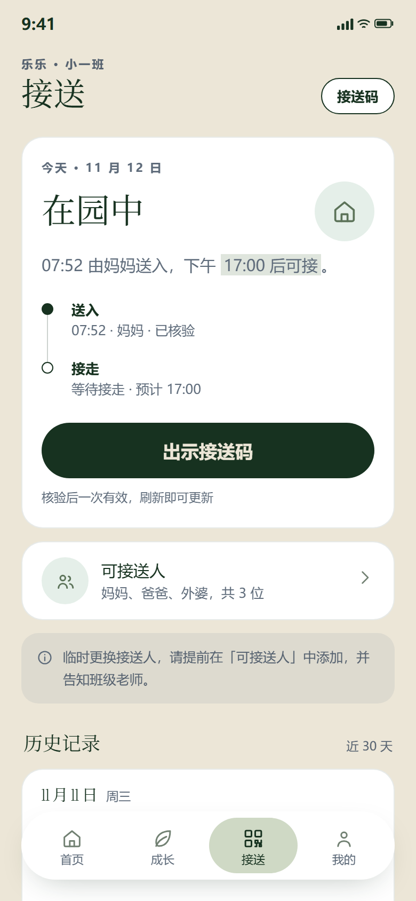
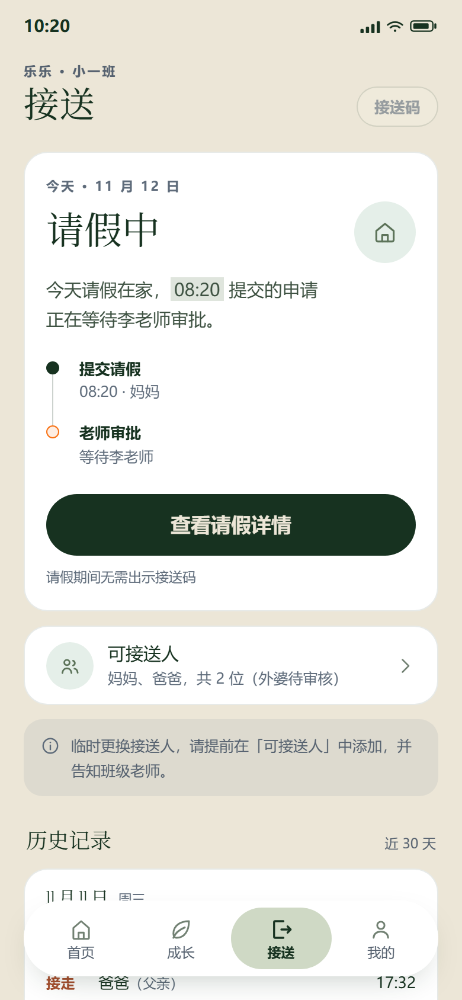
恢复 +10/+15 与连续打卡；需 06-task 契约同步，标“未来提案”。

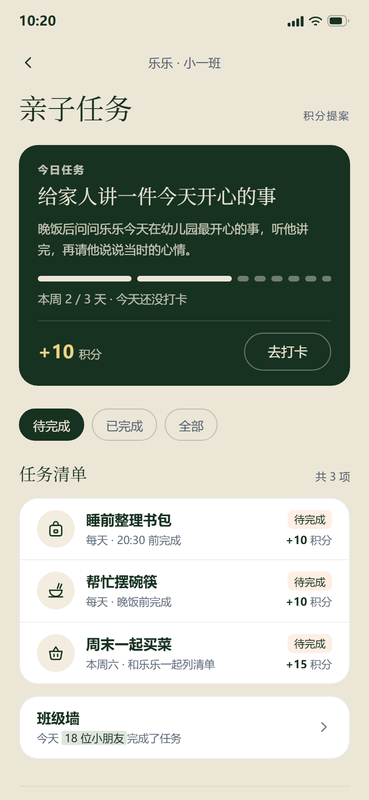
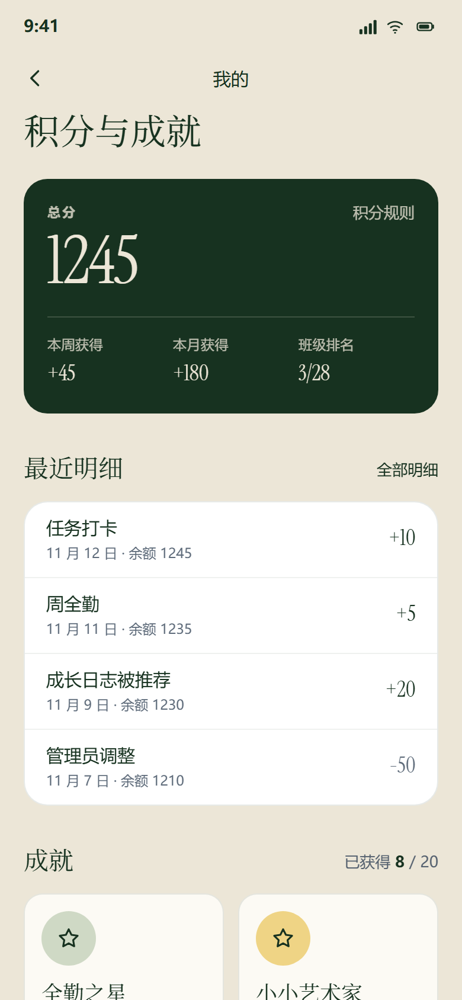
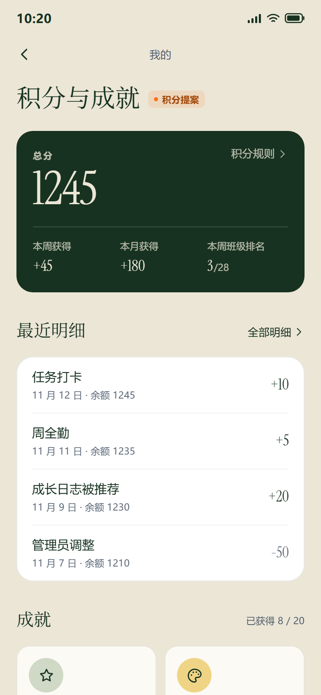
“我要报名/已报名”；需新增报名 API，标“未来提案”。


2 个通用开关 + 免打扰；免打扰需后端补字段。
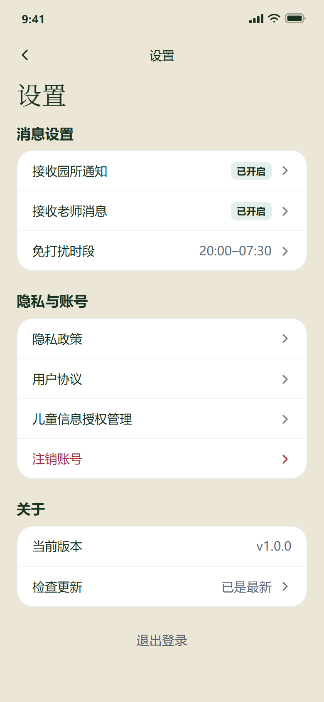
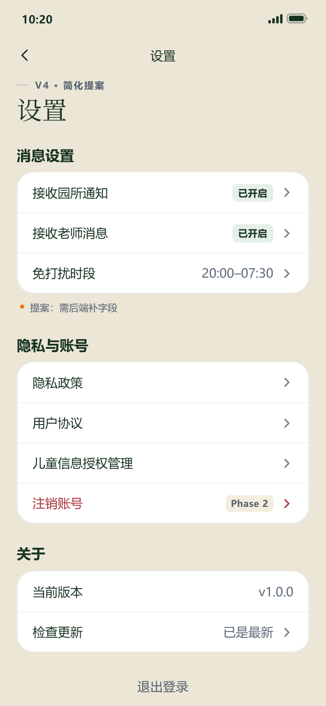
本月 +180，与 24 的“本月获得”一致。
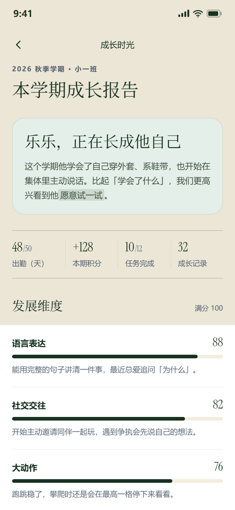
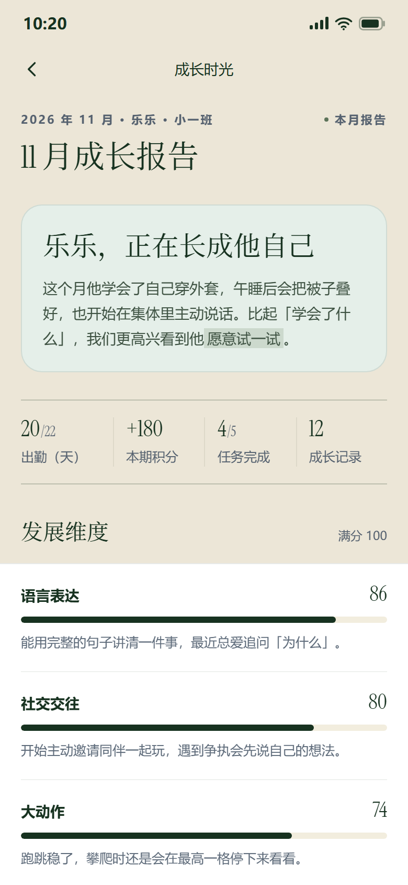
27 性别女、5 岁 2 个月、小一班；11/12 的“她”为同数据集说明。

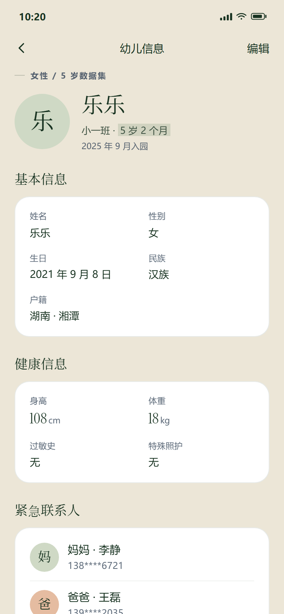
27 5 岁 2 个月、中一班；01/25/31 的班级标签为同数据集说明。
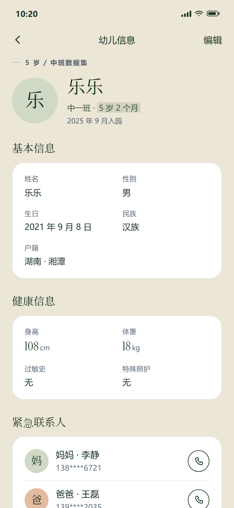
只显示乐乐，隐藏“切换”；31 的统计改用累计口径。
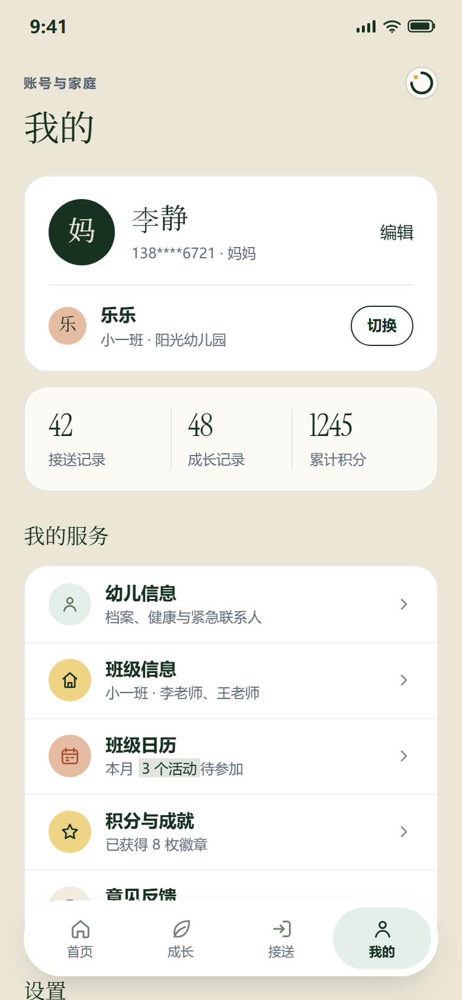
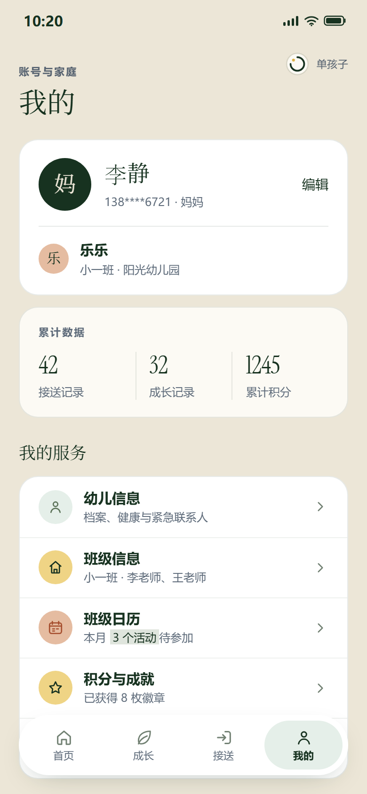